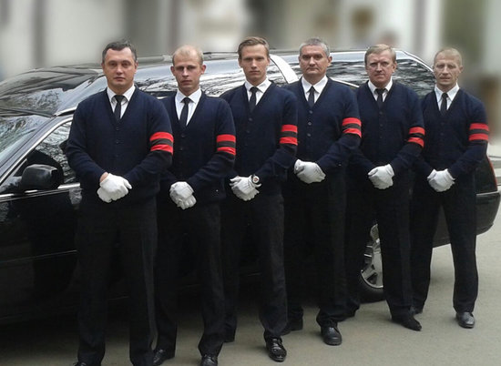

Ритуальные услуги

Известие о смерти близкого человека невозможно принять спокойно. Тяжелое эмоциональное состояние делает нас слабыми и невнимательными. Но, в момент переживания горя перед родственниками усопшего встают новые задачи, требующие ясности мысли и концентрации внимания. Чтобы организовать достойное захоронение, нужно собраться с силами или обратиться за помощью к профессионалам. «Ритуальные услуги» поможет организовать похороны или провести другие траурные мероприятия. Сотрудники службы имеют богатый опыт работы. Они могут самостоятельно посетить все необходимые инстанции, собрать документы, а также организовать похороны под ключ, избавив родственников от столь тягостных обязанностей.